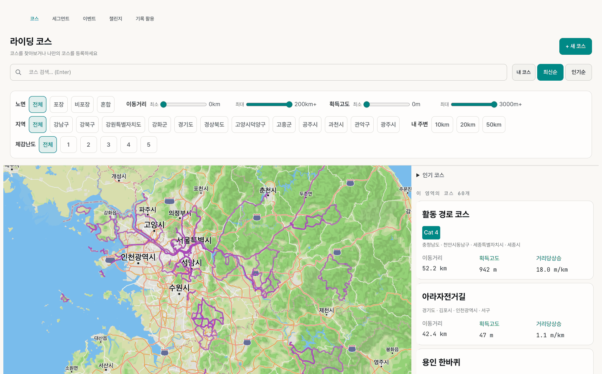
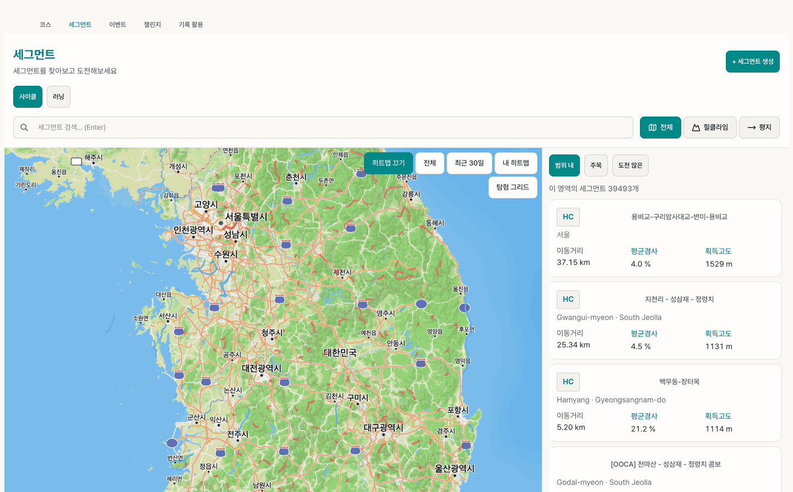
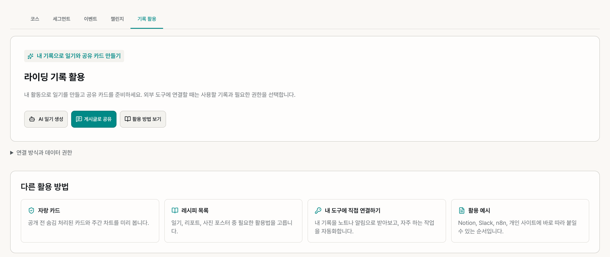
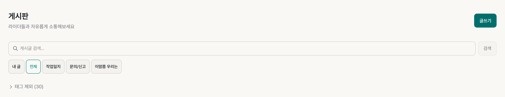

4. 비교·탐색 — 코스·세그먼트·챌린지·게시판
이 장에서 할 수 있는 것
- 탐색 메뉴에서 다음에 달릴 코스를 고르고, 세그먼트(짧은 구간) 기록을 남과 견줍니다.
- 월간 거리 챌린지에 참가하고, 내 기록으로 일기·자랑 카드를 만듭니다.
- 게시판에서 글을 읽고 쓰며, 문의·신고를 남깁니다.
탐색 메뉴 한눈에 보기
위쪽 메뉴 탐색을 누르면 아래 탭 5개가 나옵니다.
| 탭 | 하는 일 | 설명서 |
|---|---|---|
| 코스 | 다른 사람이 등록한 길을 찾고, 내 코스를 등록합니다. | 4.1 |
| 세그먼트 | 짧은 구간의 순위와 내 기록을 봅니다(옛 "리더보드"). | 4.2 |
| 이벤트 | 그란폰도·투어 라이딩을 찾고 참가합니다. | 5.5 |
| 챌린지 | 월간 거리 도전, 클럽 거리 리그 | 4.4 |
| 기록 활용 | AI 일기, 게시글 공유, 자랑 카드, 외부 도구 연결 | 4.5 |
4.1 코스 — 다음에 달릴 길 고르기

따라 하기
- 탐색 > 코스를 엽니다. 화면 제목은 라이딩 코스입니다.
- 검색 칸에 이름을 넣고 Enter를 누르거나, 내 코스 · 최신순 · 인기순으로 정렬합니다.
- 필터에서 노면(포장 · 비포장 · 혼합), 이동거리·획득고도 범위, 지역, 내 주변(10 · 20 · 50km), 체감난도(1~5)를 고릅니다.
- 아래 지도를 움직이면 오른쪽 목록이 "이 영역의 코스 N개"로 바뀝니다. 인기 코스를 펼쳐 볼 수도 있습니다.
- 목록의 코스를 눌러 상세를 봅니다.
코스 카드 읽는 법
| 항목 | 판단 방법 |
|---|---|
| 이동거리 | 평소 타는 거리와 견줍니다. 너무 길면 완주 부담이 큽니다. |
| 획득고도 | 오르는 높이의 합. 같은 거리라도 높을수록 힘듭니다. |
| 거리당상승 (m/km) | 1km마다 평균 몇 m 오르는지. 코스끼리 난이도를 빠르게 비교하는 숫자입니다. |
| Cat 4 · 3 · 2 · 1 · HC | 코스 안 오르막의 등급. 숫자가 작을수록(그리고 HC가) 더 힘든 오르막입니다(4.3). |
예: 100km에 1,500m를 오르면 거리당상승 15m/km — 꽤 힘든 산악 코스입니다.
4.2 세그먼트 — 같은 구간, 다른 기록

따라 하기
- 탐색 > 세그먼트를 엽니다. 위쪽에서 사이클 · 러닝을 고르고, 검색 칸 오른쪽에서 전체 · 힐클라임 · 평지를 고릅니다.
- 지도를 움직이면 오른쪽 목록에 "이 영역의 세그먼트 N개"가 나옵니다. 목록은 범위 내 · 주목 · 도전 많은 순으로 바꿔 볼 수 있습니다.
- 지도 위 버튼으로 히트맵을 켜고 끄거나(히트맵 끄기 · 전체 · 최근 30일 · 내 히트맵), 탐험 그리드를 봅니다.
- 세그먼트를 눌러 상세 페이지를 엽니다. 새 세그먼트는 오른쪽 위 + 세그먼트 생성으로 만듭니다.
- 상세에서 거리 · 획득고도 · 평균경사 · 최대경사, 내 최고 기록, 리더보드를 봅니다.
상세 화면 읽는 법
| 영역 | 뜻 |
|---|---|
| 리더보드 | 이 구간을 지난 사람들의 기록 순위. 남성 1위 기록을 KOM, 여성 1위 기록을 QOM이라고 부릅니다. |
| 내 최고 기록 · 내 기록 히스토리 | 내가 이 구간을 지난 기록들. 시간이 줄고 있으면 실력이 오르는 중입니다. |
| 내가 달리면? | 내 파워 기록(PDC)과 체중으로 추정한 예상 시간과 예상 순위. 파워 데이터와 체중이 있어야 나옵니다. |
| 로컬 레전드 | 최근 90일 동안 이 구간을 가장 많이 완주한 사람 |
| 이 세그먼트를 쓰는 코스 | 이 구간이 들어 있는 코스 목록 |
처음에는 남과의 순위보다 같은 구간에서 내 기록이 줄고 있는지를 보세요. 리더보드에는 공개 범위가 허용한 기록만 들어갑니다.
4.3 오르막 등급 읽기
| 등급 | 느낌 | 준비 |
|---|---|---|
| Cat 4 | 짧은 언덕 — 기어를 내리면 넘깁니다. | 리듬만 지키며 통과 |
| Cat 3 | 꽤 긴 오르막 — 숨이 찹니다. | 처음에 너무 세게 오르지 않기 |
| Cat 2 | 본격적인 오르막 — 후반에 무너질 수 있습니다. | 오르기 전에 페이스 계획 세우기 |
| Cat 1 | 길고 힘든 오르막 — 경험자에게도 도전 | 보급, 기어비 미리 확인 |
| HC | 등급을 매길 수 없을 만큼 큰 고개 | 충분히 훈련한 뒤 도전 |
4.4 챌린지 — 월간 거리 도전과 클럽 리그
- 탐색 > 챌린지를 엽니다.
- 개인 월간 챌린지에서 이번 달 거리 목표(300km · 500km · 1000km) 중 하나의 참가를 누릅니다. 내 활동 거리가 자동으로 쌓입니다.
- 클럽 거리 리그는 클럽 회원들의 이번 달 공개 활동 이동거리를 합해 클럽끼리 순위를 겨룹니다. 내가 운영하는 클럽이 있으면 관리 클럽을 고르고 리그 만들기로 엽니다.
리그에는 공개 활동의 거리만 들어갑니다. 비공개 활동은 합산되지 않습니다.
4.5 기록 활용 — 일기 · 공유 카드 · 외부 도구

탐색 > 기록 활용은 내 활동으로 무언가를 만드는 곳입니다.
| 버튼·카드 | 하는 일 |
|---|---|
| AI 일기 생성 | 내 활동으로 운동 일기를 만듭니다. |
| 게시글로 공유 | 기록을 게시판 글로 올립니다. |
| 활용 방법 보기 | 쓰는 방법을 단계별로 봅니다. |
| 자랑 카드 | 공개 전에 숨김 처리된 카드와 주간 차트를 미리 봅니다. |
| 레시피 목록 | 일기, 리포트, 사진 포스터 등 활용법을 고릅니다. |
| 내 도구에 직접 연결하기 | 내 기록을 노트나 알림으로 받아 보는 자동화. 개인 데이터 API 키가 필요합니다(10.5). |
| 활용 예시 | Notion, Slack, n8n, 개인 사이트에 붙이는 순서 |
연결 방식과 데이터 권한을 펼치면 외부 도구에 어떤 기록이 어떤 권한으로 나가는지 확인할 수 있습니다.
4.6 세그먼트 · 코스 만들기
세그먼트 만들기
- 내 활동 상세 ⋯ > 세그먼트 만들기(또는 + 만들기 > 세그먼트 만들기)로 들어갑니다.
- 지도·고도 그래프에서 시작점과 끝점을 정합니다. 키보드 ←→로 미세 조정합니다.
- 이름과 분류(힐클라임 · 스프린트 · 평지 등)를 정하고 세그먼트 제출을 누릅니다.
제출한 세그먼트는 바로 공개되지 않고 심사 대기중이 됩니다. 승인되면 리더보드가 열립니다.
코스 만들기
- 탐색 > 코스의 + 새 코스, + 만들기 > 코스 만들기, 또는 활동 상세 ⋯ > 코스로 만들기로 들어갑니다.
- 활동 경로 전체, 활동의 일부 구간, 또는 GPX 파일 업로드 중에서 고릅니다. 활동에서 들어왔을 때만 앞의 두 방식이 보입니다.
- 이름을 정하고 저장합니다. 코스는 세그먼트와 달리 심사 없이 바로 등록됩니다.
4.7 게시판

따라 하기
- 위쪽 메뉴 게시판을 엽니다.
- 내 글 · 전체 · 작업일지 · 문의/신고 · 이맘쯤 우리는 중에서 글 종류를 고르고, 검색 칸이나 오른쪽 인기 태그로 찾습니다.
- 글을 쓰려면 오른쪽 위 글쓰기를 누릅니다(로그인 필요).
| 보이는 것 | 뜻 |
|---|---|
| 글 카드 아래 "조회 · 좋아요 · 댓글" | 읽은 수, 좋아요 수, 댓글 수 |
| 태그 제외 | 보고 싶지 않은 태그의 글을 목록에서 뺍니다. |
앱 오류나 건의는 문의/신고 종류로 쓰세요. 유형(버그 신고 · 기능 요청 · 문의 · 기타)을 고르고 비공개로 제출하면 본인과 검토 담당자만 봅니다.
4.8 러닝 기록을 비교할 때
| 비교하려는 것 | 먼저 맞출 조건 |
|---|---|
| 지난주보다 빨라졌나 | 같은 거리·코스인지, 이동 시간과 정지 시간 |
| 후반에 페이스가 무너졌나 | 스플릿의 실제 구간 거리, 고도, 심박, 기록이 빠진 곳 |
| 언덕 러닝이 더 힘들었나 | 실제 페이스와 경사 보정 페이스(GAP)를 나눠 보기 |
| 친구보다 많이 달렸나 | 서로 공개한 범위, 그리고 사이클 km와 러닝 km는 따로 보기 |
거리별 최고 기록(예: 5km 최고)은 코치 화면에서 봅니다(6.7).
4.9 자주 막히는 점
| 이럴 때 | 확인할 것 |
|---|---|
| 내 기록이 리더보드에 없어요 | 그 활동이 비공개인지, 세그먼트가 아직 심사 대기중인지 |
| "내가 달리면?"이 비어 있어요 | 파워 기록과 체중이 있어야 합니다(6.4). |